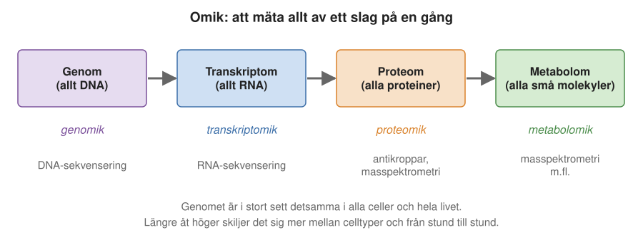
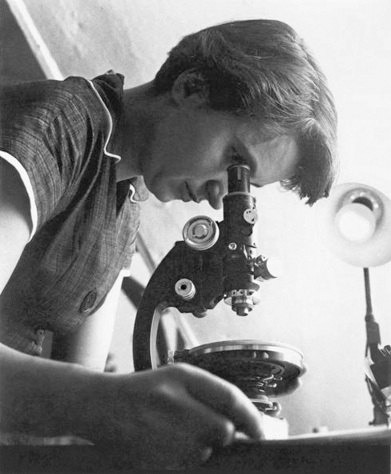
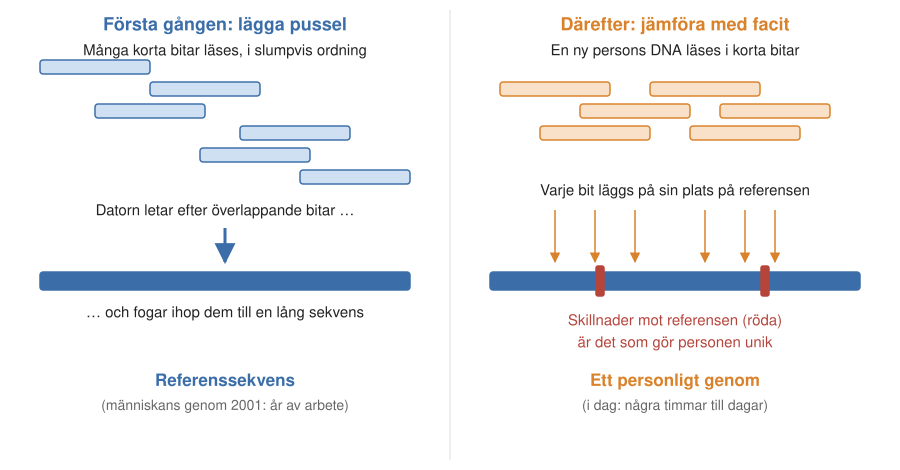
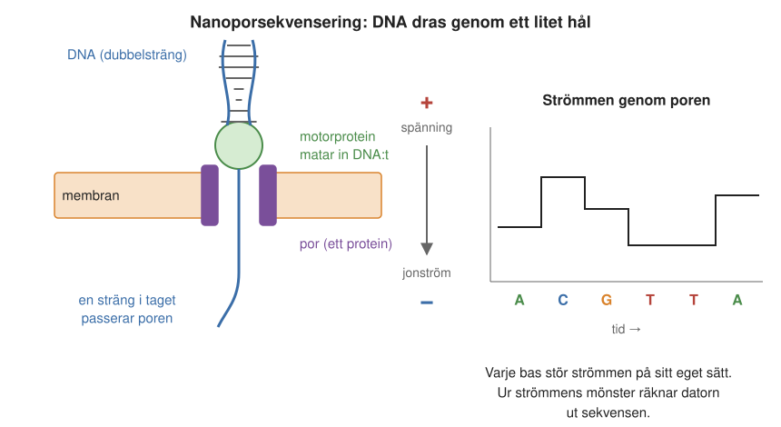
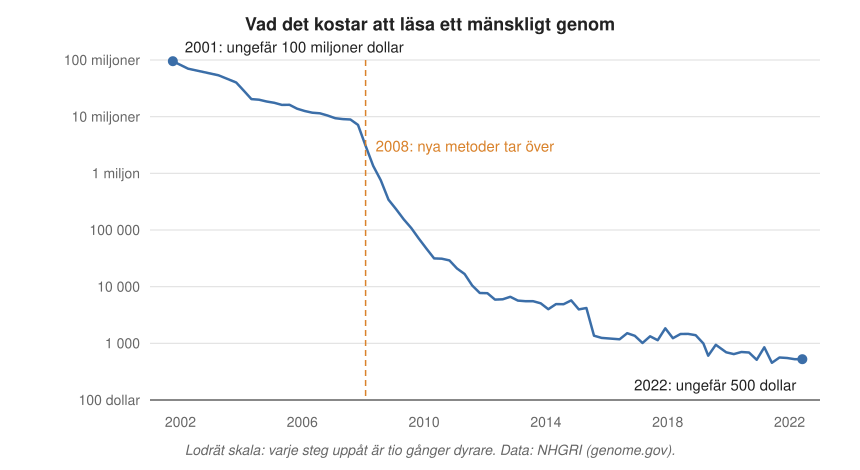
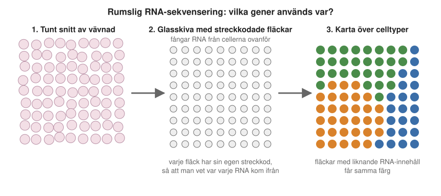
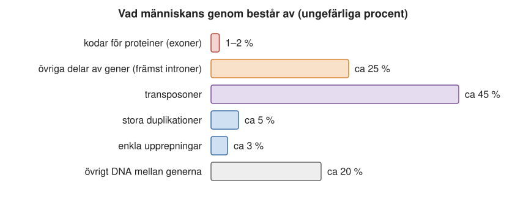
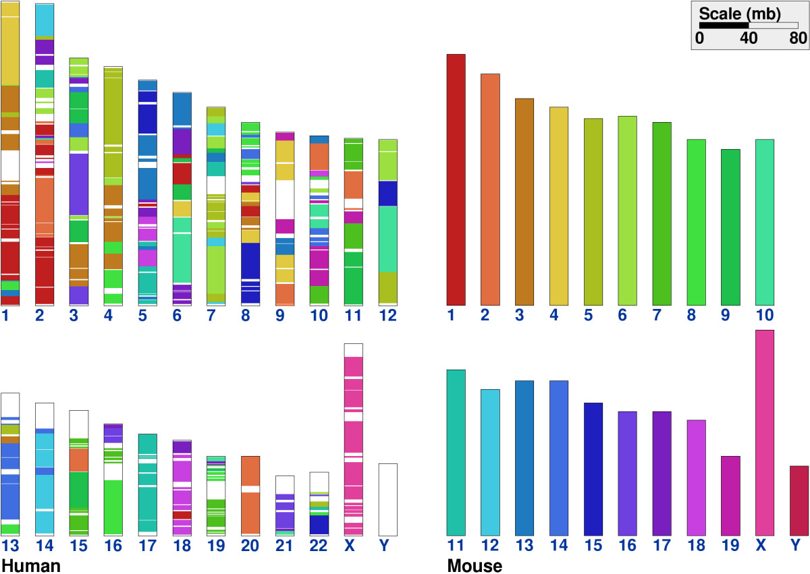
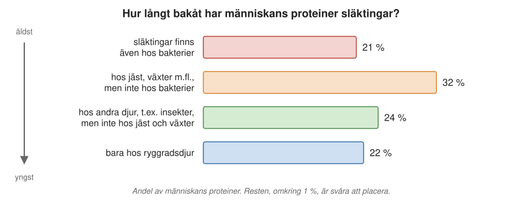
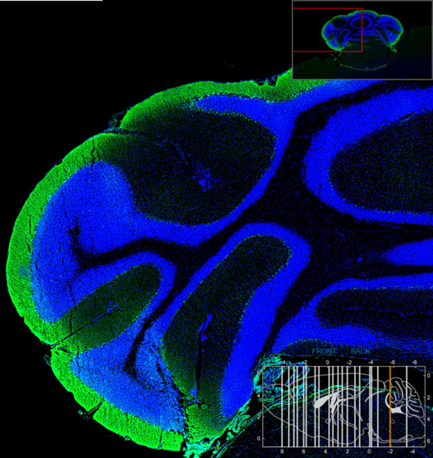

11 Omik-världen – en totalbild
I början av 1980-talet kunde en doktorand ägna stora delar av sitt avhandlingsarbete åt att klona, rena fram och läsa ut ordningen av baserna i en enda gen, kanske tusen baser. I dag står det maskiner i Solna, strax norr om Stockholm, som läser omkring 20 miljoner baser i sekunden. På en timme hinner de läsa lika mycket DNA som det finns i ett tjugotal mänskliga arvsmassor. Och för några tusen kronor kan vem som helst få hela sin arvsmassa uppläst.
Den utvecklingen har förändrat biologin. Förr studerade forskarna en gen eller ett protein i taget. I dag kan man kartlägga alla gener i en organism, alla RNA-molekyler i en enskild cell eller alla bakterier i ett prov från tarmen. Det här kapitlet handlar om den storskaliga biologin: hur den växte fram, vad den har lärt oss om vårt eget DNA, och vad den kan användas till.
11.1 Vad betyder omik?
Ordet genom mötte vi redan i Avsnitt 2.4.2: det är allt DNA i en cell, hela arvsmassan. Att studera hela genom, och inte bara enstaka gener, kallas genomik eller genomforskning. Det var det första av en rad liknande ord. Ändelsen -omik har sedan spridit sig till andra fält, och i dag talar man om omik som ett samlingsnamn (Figur 11.1):
- Transkriptomik handlar om allt RNA i en cell, cellens transkriptom. Det visar vilka gener som används just nu.
- Proteomik handlar om alla proteiner i en cell eller ett organ, cellens proteom.
- Metabolomik handlar om alla de tusentals små molekyler som deltar i ämnesomsättningen, cellens metabolom (Avsnitt 2.12).
Gemensamt för alla omik-fält är att man försöker mäta så mycket som möjligt av en viss sorts molekyl på en gång, i en cell, ett organ eller en hel organism, vid ett visst tillfälle. Det kräver kraftfulla mätmetoder, stora databaser och mycket datorkraft.

Det finns en viktig skillnad mellan nivåerna. Genomet är i stort sett detsamma i alla kroppens celler och förändras inte under livet. Transkriptom, proteom och metabolom är däremot olika i en levercell och en nervcell, och de förändras från timme till timme, beroende på vad vi har ätit, om vi sover eller om vi är sjuka.
Två siffror att komma ihåg
Två siffror sammanfattar människans genom, och de återkommer genom hela kapitlet:
- 3 miljarder baspar. Så långt är DNA:t i en uppsättning av människans kromosomer, om man räknar alla 22 vanliga kromosomer och könskromosomerna. (Varje cell har två uppsättningar, en från varje förälder, se Avsnitt 3.2.3.)
- Ungefär 20 000 gener. Med det menas här gener som kodar för proteiner. Våra celler är med andra ord programmerade att kunna tillverka ungefär 20 000 olika proteiner.
Den andra siffran är inte helt exakt, eftersom den beror på vad man räknar som “ett protein”. Som vi såg i Avsnitt 3.2.2 är våra gener uppdelade i bitar, exoner, som kan klistras ihop på olika sätt. En och samma gen kan därför ge upphov till flera närbesläktade proteiner. Räknar man med alla sådana varianter blir proteinerna betydligt fler. Men räknar man en grundmodell per gen hamnar man på omkring 20 000.
11.2 Från ett bakterieförsök till en dubbelspiral
Hur kom vi hit? Genomforskningen vilar på två upptäckter från mitten av 1900-talet: att arvet bärs av DNA, och hur DNA är byggt. Först när de var gjorda fanns det en anledning att försöka läsa DNA, och en idé om hur informationen var lagrad.
Avery: arvet sitter i DNA
Redan på 1940-talet kände man till DNA. Man visste att det var en stor molekyl byggd av fyra sorters baser, A, C, G och T. Men de flesta forskare trodde att arvsanlagen satt i proteinerna. Hur skulle något så komplicerat som ärftlighet kunna skrivas med bara fyra bokstäver, när proteinerna hade tjugo olika byggstenar?
Den amerikanske bakteriologen Oswald Avery vid Rockefellerinstitutet i New York visade att det var tvärtom. Han arbetade med pneumokocker, bakterier som kan orsaka lunginflammation. Det fanns ofarliga stammar och nära besläktade stammar som gjorde möss sjuka, och man hade upptäckt att ofarliga bakterier kunde omvandlas till farliga om de blandades med döda farliga bakterier. Det betydde att något ärftligt ämne fördes över från de döda bakterierna till de levande. Men vilket?
Avery och hans medarbetare renade fram olika ämnen ur de farliga bakterierna och prövade dem ett i taget. Det räckte med rent DNA för att göra de ofarliga bakterierna farliga, och förändringen ärvdes vidare till nästa generation. Proteiner behövdes inte. Resultatet publicerades 1944, och slutsatsen var försiktigt formulerad: DNA verkade vara själva den omvandlande principen.
Watson, Crick och Franklin
Efter Avery började många intressera sig för DNA. Bara nio år senare, i april 1953, kom en kort artikel i tidskriften Nature som kanske är 1900-talets viktigaste inom biologin. James Watson och Francis Crick i Cambridge föreslog där att DNA är en dubbelspiral, där A alltid parar med T och G med C. Vi gick igenom själva strukturen i Avsnitt 1.5.2.
Watson och Crick gjorde inga egna experiment. De byggde modeller av kulor och pinnar, som de modeller av molekyler många minns från skolan, och försökte få dem att stämma med vad andra hade mätt. Man visste att det fanns lika mycket A som T och lika mycket G som C i DNA, men inte varför.
Avgörande blev en röntgenbild av DNA som Rosalind Franklin (Figur 11.2) hade tagit vid King’s College i London. Bilden var ännu inte publicerad, men Watson fick se den när han besökte laboratoriet i London i början av 1953. Det var Franklins kollega Maurice Wilkins som visade den, utan att hon visste om det. Bilden räckte inte för att räkna ut strukturen, men den visade att molekylen var en regelbunden spiral och gav några viktiga mått. En eftermiddag upptäckte Watson att paret G–C och paret A–T har exakt samma form och storlek när de hålls ihop av vätebindningar. Då föll bitarna på plats. Om A alltid parar med T och G med C måste det finnas lika mycket av A som av T, och lika mycket G som C.
De hade bråttom. Den berömde amerikanske kemisten Linus Pauling hade just föreslagit en helt annan struktur för DNA, med tre strängar. Watson och Crick såg direkt att den var fel. Men Pauling var så berömd och så säker på sin sak att det skulle dröja några veckor innan någon vågade säga till honom att han hade fel. Det gav dem ett kort försprång, och de skrev ihop sin artikel på några dagar. På ett berömt fotografi från de dagarna står de båda vid sin modell, och Crick pekar på den med en räknesticka.
Artikeln är bara en sida lång och innehåller en berömd underdrift: “It has not escaped our notice that the specific pairing we have postulated immediately suggests a possible copying mechanism for the genetic material.”
Rosalind Franklin publicerade sin röntgenbild i samma nummer av Nature. Hon var en mycket noggrann experimentalist som inte ville påstå mer än hon kunde visa, och hennes artikel är tekniskt hållen. Hon nöjde sig med att konstatera att hennes resultat inte var oförenliga med Watsons och Cricks modell. Det kan läsas som en stilla kritik mot två forskare som inte hade gjort några egna experiment men ändå drog stora slutsatser.
Hennes insats uppmärksammades länge för lite. Watson skrev senare en populär bok om upptäckten, The Double Helix (1968), där han tonade ned hennes insats och beskrev henne nedlåtande. Hon dog i cancer 1958, bara 37 år gammal, och fanns därför inte med när Watson, Crick och Maurice Wilkins fick Nobelpriset 1962. Historien om upptäckten har blivit ett ofta citerat exempel på hur kvinnliga forskares insatser har förbisetts.

Sanger och de mödosamma åren
Under de följande två årtiondena klarlades hur DNA kopieras till mRNA och hur mRNA styr tillverkningen av proteiner (Kapitel 1). Men det dröjde till mitten av 1970-talet innan man kunde läsa ordningen av baserna i DNA, med Frederick Sangers metod (Avsnitt 3.6). Metoden var arbetskrävande. En bra dag kunde en forskare läsa omkring hundra baser, så det tog veckor eller månader att få fram sekvensen för en enda gen. Ändå blev det snabbt klart hur mycket man lärde sig av en DNA-sekvens, och efterhand började man automatisera delar av arbetet. Då tog det fart.
11.3 Det första genomet: en liten bakterie
År 1995, ungefär 40 år efter upptäckten av dubbelspiralen, lästes för första gången hela arvsmassan hos en levande organism. Det var bakterien Haemophilus influenzae, som kan orsaka bland annat öroninflammation och lunginflammation. (Namnet kommer av att man först felaktigt trodde att den orsakade influensa.) Dess arvsmassa är en enda ringformad DNA-molekyl på ungefär 1,8 miljoner baspar.
Bakom projektet stod den amerikanske forskaren och entreprenören Craig Venter. Hans idé var att använda de första halvautomatiska sekvenseringsmaskinerna i stor skala. Han ställde upp omkring 200 maskiner i en lokal, anställde ett femtiotal studenter som förberedde proverna och lät maskinerna gå dygnet runt. Arvsmassan hackades sönder i små bitar som lästes var för sig, och sedan pusslade datorprogram ihop bitarna till en hel sekvens. Venter sökte pengar för projektet från de amerikanska nationella hälsoinstituten, NIH, men bedömarna trodde inte att metoden skulle fungera. När avslaget kom var bakteriens genom redan i stort sett färdigt, finansierat med privata pengar.
För första gången kunde man se allt det DNA som behövs för att bygga en enkel bakterie: 1 743 gener, de flesta för proteiner. Det var en överraskning hur lite man visste. Bara en mindre del av proteinerna hade någon studerat tidigare, och för omkring fyra av tio gener hade man ingen aning om vad proteinerna gjorde. Så är det fortfarande när man läser arvsmassan hos en organism som inte är nära släkt med någon man redan känner: många gener är nya, och vad de gör måste undersökas en i taget.
11.4 Människans genom
Bakteriens genom var ett genombrott, men det stora målet var vårt eget. Människans genom är mer än tusen gånger större än bakteriens. Det här avsnittet handlar om hur det lästes, hur bitarna fogades ihop och vad man hittade.
En kapplöpning mellan två projekt
Redan 1990 hade ett stort internationellt projekt startat för att läsa hela människans arvsmassa, Human Genome Project. Det finansierades med offentliga medel, framför allt från USA, och leddes under de avgörande åren av Francis Collins. Projektet räknade med att bli klart omkring 2005.
Men 1998 meddelade Craig Venter att han med sitt nystartade företag Celera skulle läsa människans genom snabbare, med privata pengar och samma metod som han använt för bakterien. Många befarade att företaget skulle ta patent på stora delar av människans arvsmassa, så att den blev privat egendom. Det offentliga projektet växlade därför upp, och de två grupperna gick i mål ungefär samtidigt. I juni 2000 presenterade de ett första utkast tillsammans med president Bill Clinton i Vita huset (Figur 11.3).
De stora vetenskapliga artiklarna kom i februari 2001: det offentliga projektets i Nature och Celeras i Science. Sekvenserna var inte helt fullständiga, men den stora bilden var klar. Och informationen blev allmänt tillgänglig. Celera sålde under några år licenser till läkemedelsföretag som ville söka i företagets sekvens, men när de offentliga data blev tillräckligt många slutade företagen betala.
Hur lägger man ett pussel med tre miljarder bitar?
Ingen metod kan läsa en hel kromosom från ena änden till den andra. Man måste därför klippa DNA:t i bitar, läsa bitarna och sedan lägga pussel.
I det offentliga projektet gick det till ungefär så här. DNA från mänskliga celler klipptes i bitar som var och en klistrades in i en bakterie, med den teknik för kloning som beskrevs i Avsnitt 3.4.2. Man fick tusentals bakteriestammar, var och en med sin bit mänskligt DNA, och frysarna fylldes av dem. Varje stam odlades upp, så att man fick tillräckligt mycket av biten, och bitarna lästes i korta avsnitt om några hundra till tusen baser.
Sedan tog datorerna över. Om slutet på ett avsnitt har exakt samma sekvens som början på ett annat, till exempel 150 baser i rad, så kommer de förmodligen från grannställen på kromosomen. Genom att leta efter sådana överlappningar kunde man foga ihop avsnitten till allt längre sammanhängande sekvenser (Figur 11.4, till vänster). Resultatet kallas en referenssekvens: en sorts facit för hur människans genom ser ut, kromosom för kromosom.

När referenssekvensen väl fanns blev allt mycket enklare. Ska man läsa en ny människas genom behöver man inte längre klona bitarna i bakterier eller lägga pusslet från början. DNA:t klipps i bitar som läses direkt, och varje bit läggs på det ställe i referenssekvensen där den passar (Figur 11.4, till höger). Den nya personens DNA skiljer sig bara i enstaka baser från referensen, så det är lätt att se var varje bit hör hemma, och just skillnaderna är det man är intresserad av.
Själva referenssekvensen hade dock luckor, och arbetet med att fylla dem fortsatte i många år efter 2001. Det svåraste var områden där samma korta sekvens upprepas hundratals gånger i rad. Läser man bara korta bitar går det inte att avgöra om sekvensen upprepas 480 eller 500 gånger, eller hur bitarna ska läggas. Först 2022 publicerades en sekvens utan luckor för alla de vanliga kromosomerna, med hjälp av nya metoder som kan läsa mycket långa bitar. Den innehåller drygt 3,05 miljarder baspar och, fortfarande, omkring 20 000 proteinkodande gener.
Bara 20 000 gener
En av de stora överraskningarna 2001 var hur få gener vi har. Innan sekvensen var klar hade många gissat på 50 000 till 100 000, kanske fler. Det blev omkring 20 000, och den siffran står sig fortfarande. En liten rundmask, som består av omkring tusen celler, har ungefär lika många gener som vi (Tabell 11.1).
| Organism | Genomets storlek (baspar) | Antal proteinkodande gener (ungefär) |
|---|---|---|
| Haemophilus influenzae (bakterie) | 1,8 miljoner | 1 700 |
| E. coli (tarmbakterie) | 4,6 miljoner | 4 300 |
| bakjäst | 12 miljoner | 6 000 |
| bananfluga | 140 miljoner | 14 000 |
| rundmasken C. elegans | 100 miljoner | 20 000 |
| backtrav (en liten växt) | 135 miljoner | 27 000 |
| mus | 2,7 miljarder | 22 000 |
| människa | 3,1 miljarder | 20 000 |
Det som gör oss mer komplicerade än en mask är alltså inte i första hand fler gener. Det är snarare hur generna används: när och var de slås på och av, hur deras RNA klipps och klistras till olika varianter, och hur proteinerna samverkar.
De första personliga genomen
Referenssekvenserna från 2001 byggde på DNA från flera anonyma personer. Den första människa som fick hela sin arvsmassa publicerad under eget namn var, föga förvånande, Craig Venter själv, 2007. Artikeln inleds med att konstatera att DNA-givaren gett sitt fulla samtycke till att hela hans arvsmassa görs offentlig.
Ungefär samtidigt lästes James Watsons genom. Han bad att få slippa veta vilken variant han hade av en gen, APOE, där en viss variant ger ökad risk för Alzheimers sjukdom, som funnits i hans släkt. Den delen utelämnades när sekvensen publicerades. Exemplet visar en fråga som blir allt viktigare: vår arvsmassa säger något inte bara om oss själva utan också om våra föräldrar, syskon och barn, och alla vill inte veta allt.
11.5 Sekvensering i dag
Sedan 2001 har tekniken för att läsa DNA förändrats i grunden. Det här avsnittet beskriver hur det går till i dag, vilka problem som återstår och varför det har blivit så billigt.
En fabrik för DNA-läsning
I dag läses DNA i stor skala i anläggningar som närmast liknar fabriker. En av dem finns i Solna. Den som åker Solnavägen ut från Stockholm passerar Nya Karolinska sjukhuset och strax därefter några runda byggnader som påminner om hattaskar. Där ligger SciLifeLab, ett nationellt centrum för livsvetenskaplig forskning som drivs gemensamt av Karolinska institutet, KTH, Stockholms universitet och Uppsala universitet. Där finns bland annat en stor anläggning för DNA-sekvensering, med de senaste generationernas maskiner. Tillsammans läser de omkring 20 miljoner baspar i sekunden, vilket i rå läskapacitet motsvarar ett tjugotal mänskliga genom i timmen. Det lilla bakteriegenomet från 1995, som tog lång tid att få fram, läses där på en tiondels sekund. Ännu större anläggningar finns i andra länder.
Kapaciteten kommer till nytta när det brådskar. När covid-19-pandemin bröt ut 2020 var SciLifeLab tidigt med att sekvensera virusets arvsmassa från svenska patientprover, för att följa hur nya varianter spred sig.
Läsfel och mängder av data
Ingen sekvenseringsmetod är felfri. Man kommer runt det genom att läsa varje ställe i genomet många gånger, från olika överlappande bitar. Om nio av tio läsningar säger G och en säger A, så var det troligen ett läsfel i den tionde. Det är en anledning till att det behövs så stor läskapacitet: för ett tillförlitligt mänskligt genom läser man i regel varje bas tiotals gånger.
All denna läsning ger enorma datamängder. Maskinerna mäter ofta inte bokstäver direkt, utan tar bilder av miljontals färgade prickar eller mäter elektriska signaler. Rådata tar så stor plats att det inte går att spara. Den översätts till sekvens direkt i maskinen och kastas sedan. Behöver man gå tillbaka får man sekvensera om provet.
Nanoporer: att läsa DNA med elektrisk ström
De stora maskinerna bygger på olika sorters kemi. En annan metod, som snarast bygger på fysik, är nanoporsekvensering (Figur 11.5). Ett tunt membran är fyllt av tusentals små porer, hål i form av proteiner, så smala att bara en enda DNA-sträng får plats. Över membranet läggs en elektrisk spänning, så att joner strömmar genom porerna. Ett motorprotein sätter sig på DNA-molekylen, delar dubbelspiralen och matar ena strängen genom poren, bas för bas. De baser som just befinner sig i poren, några stycken åt gången, hindrar jonerna lite olika mycket, och därför varierar strömmen. Ur strömmens mönster kan en dator räkna ut sekvensen.

Det märkliga med metoden är hur långa bitar den kan läsa: omkring 100 000 baser i ett svep, från ena änden av molekylen till den andra, med omkring 99 procents träffsäkerhet per läsning. Långa bitar är en stor fördel när man läser arvsmassan hos en organism som ingen läst förut, eftersom pusslet då blir mycket lättare att lägga. En annan fördel är storleken: den minsta apparaten är inte större än en mobiltelefon och kopplas till en vanlig bärbar dator, så man kan ta med sig den ut i fält.
Från 100 miljoner dollar till några hundra
Det första mänskliga genomet kostade storleksordningen 100 miljoner dollar att läsa, räknat bara på själva sekvenseringen. Sedan har kostnaden rasat (Figur 11.6). Fram till 2007 sjönk den ungefär i samma takt som datorer har blivit billigare, enligt den så kallade Moores lag. Omkring 2008 kom nya sekvenseringsmetoder, och då föll kostnaden dramatiskt. I dag kostar själva läsningen av ett mänskligt genom några hundra dollar, även om analys och annat kommer till.

Sekvensexplosionen
Följden är att mängden lästa DNA-sekvenser har exploderat. Allt samlas i några stora offentliga databaser, i USA, Europa och Japan, som utbyter data så att de innehåller i stort sett samma sak. Vem som helst kan söka i dem gratis via internet. I slutet av mars 2026 innehöll den europeiska databasen omkring 45 000 miljarder baspar, från människor, djur, växter, bakterier och virus, och mängden ökar snabbare och snabbare.
Ur DNA-sekvenserna kan en dator leta upp de bitar som kodar för proteiner och översätta dem med den genetiska koden. På det sättet känner man i dag till omkring 200 miljoner proteinsekvenser. Bara en liten del av dessa proteiner har någon människa någonsin sett i ett provrör. Ändå vet vi hur de är byggda, och med de AI-metoder som beskrivs i Kapitel 16 kan man i dag till och med förutsäga hur de flesta av dem veckar sig.
11.6 Vad kan ett genom berätta om dig?
När det blev billigt att läsa en människas genom blev det också möjligt att använda det i sjukvården. Det som är intressant är skillnaderna mellan människor.
Två människor skiljer sig åt i ungefär en bas på tusen. Det låter lite, men i tre miljarder baspar blir det några miljoner skillnader. De allra flesta gör ingenting, men en del påverkar hur våra proteiner fungerar och därmed vår hälsa. (Jämför vi oss med schimpansen skiljer sig ungefär en bas på hundra.)
Hur används genomet i vården? Några exempel:
- Cancer. En tumör uppstår när cellernas DNA har förändrats, och olika tumörer har olika förändringar. Genom att läsa delar av tumörens DNA, eller hela, kan läkarna i allt fler fall avgöra vilken behandling som har bäst chans att fungera.
- Sällsynta ärftliga sjukdomar. För ett barn med en oklar sjukdom kan en läsning av hela arvsmassan hitta den förändrade gen som orsakar den. Det ger familjen ett svar, och ibland en behandling.
- Ärftlig risk. Vissa förändringar i generna BRCA1 och BRCA2 ger kraftigt ökad risk för bröst- och äggstockscancer. Den som vet att hon bär en sådan förändring kan gå på tätare kontroller eller välja förebyggande behandling.
Målet kallas ibland precisionsmedicin eller personanpassad medicin: att behandlingen inte bara ska bestämmas av ålder och vikt, utan av vad som är rätt för just den personen. För vissa sjukdomar fungerar det redan i dag, för många andra inte än. De flesta vanliga sjukdomar, som hjärt-kärlsjukdom och typ 2-diabetes, påverkas av många gener med små effekter var för sig, och av levnadsvanor. För dem ger genomet sannolikheter, inte säkra besked. Förhoppningarna är stora, och en del av dem är ännu mer löfte än verklighet.
Skillnaderna mellan människor används också utanför vården, i rättsväsendet. Ett fåtal kända avsnitt i arvsmassan där människor skiljer sig mycket åt räcker för att med stor säkerhet avgöra om ett spår på en brottsplats kommer från en viss person.
11.7 Livets alla genom
Människan är långt ifrån den enda organism vars genom har lästs. Först kom de så kallade modellorganismerna, arter som forskarna av olika skäl studerat särskilt mycket: vissa bakterier, bakjäst och bananflugan. Sedan följde arter som säger något om oss själva, som schimpansen och musen.
I dag är det inget märkvärdigt att läsa ett genom. En vanlig forskargrupp har råd med det, och så fort en organism är intressant läses dess arvsmassa. Enligt en internationell förteckning över genomprojekt finns det i dag projekt för omkring en halv miljon bakterier, 60 000 eukaryoter (svampar, växter och djur) och 5 500 arkéer, mikroorganismer som ofta lever i extrema miljöer som heta källor.
DNA från det förflutna
Man kan också läsa DNA från organismer som dog för länge sedan, och på så sätt studera arter och människor från det förflutna. Ett tidigt exempel var Ötzi, ismannen som hittades 1991 i en glaciär i Alperna på gränsen mellan Österrike och Italien, där han legat i drygt 5 000 år.
Pionjären inom fältet är den svenske forskaren Svante Pääbo, verksam i Leipzig. Han utvecklade metoder för att läsa DNA ur fossila ben och lyckades 2010 presentera neandertalmänniskans genom. Det visade bland annat att våra förfäder fick barn med neandertalare, och att de flesta människor utanför Afrika bär på en liten andel neandertal-DNA. Pääbo fick Nobelpriset i fysiologi eller medicin 2022. Vid Centrum för paleogenetik i Stockholm har Love Dalén och hans kollegor läst DNA från mammutar som levde för mer än en miljon år sedan och som grävts fram ur den sibiriska permafrosten.
Att läsa så gammalt DNA är en konst i sig. DNA bryts ned med tiden, så det som finns kvar är korta bitar och små mängder. Dessutom är gamla ben fulla av DNA från bakterier och svampar som växt in i dem, och från de människor som hanterat fynden. Arbetet görs i särskilt rena laboratorier, och datorer får sortera bort alla främmande sekvenser.
11.8 Metagenomik: alla organismer på en gång
Hittills har det handlat om att läsa genomet hos en art i taget. Den billiga sekvenseringen har också öppnat ett helt nytt fält, metagenomik, där man läser många arters DNA samtidigt. Då bryr man sig inte om att odla fram en viss organism. Man tar ett prov direkt ur naturen, till exempel en flaska vatten från Östersjöns botten, lite jord eller en topsning från väggarna i tunnelbanan, och läser allt DNA som finns i provet på en gång. Sedan jämför datorer bitarna med kända sekvenser och lägger pussel med resten, så att man får veta vilka organismer som fanns där och hur mycket det fanns av var och en. Ibland kan man till och med pussla ihop hela genom för organismer som ingen tidigare känt till.
Det visade sig att mikroorganismerna är långt fler och mer varierade än man trott. Ett gram jord kan innehålla hundratals miljoner bakterier eller fler, och de allra flesta mikroorganismer i naturen, kanske mer än 99 procent, har aldrig gått att odla i ett laboratorium. Med metagenomik kan man ändå kartlägga dem. Det har betydelse för miljöforskning och jordbruk, och för medicinen.
Människans mikrobiom
Metagenomik har också använts på oss själva. Man har kartlagt de mikroorganismer vi bär på, på huden, i munnen och framför allt i tarmen. De kallas tillsammans vårt mikrobiom. I tarmen finns lika många bakterieceller som det finns celler i resten av kroppen, eller fler (länge sades det att de var tio gånger fler, men nyare beräkningar landar på ungefär lika många). Bakterierna i tarmen har tillsammans omkring hundra gånger fler olika gener än vi själva.
Man har sett att sammansättningen av tarmfloran skiljer sig mellan friska och sjuka, till exempel vid typ 2-diabetes och inflammatoriska tarmsjukdomar. Om förändringarna är orsak till sjukdomen eller en följd av den är ofta oklart och måste undersökas vidare. Men tarmfloran är en stor, nästan okänd värld som vi bär med oss hela tiden.
11.9 RNA i enskilda celler
Från bakterierna i tarmen går vi nu tillbaka till kroppens egna celler, och från DNA till RNA: till cellernas transkriptom.
Alla celler i en människa har i princip samma DNA. Att läsa DNA:t i en enskild cell säger därför inte så mycket. Men vilka gener som används skiljer sig mycket mellan celler, och det kan man se på cellens RNA. En ögonblicksbild av alla RNA-molekyler i en cell, dess transkriptom, visar vilka proteiner cellen tillverkar just nu och vilka styrsystem som är påslagna.
Med encellssekvensering går det i dag att göra en sådan ögonblicksbild för tusentals enskilda celler. Man tar ett litet vävnadsprov, en biopsi, och löser upp det så att cellerna skiljs från varandra. Varje cell öppnas för sig, och dess RNA tas till vara.
Sedan görs RNA:t om till DNA, så att alla de välutvecklade metoderna för att läsa DNA kan användas. Det sker med ett enzym som gör det omvända mot den vanliga transkriptionen: det gör en DNA-kopia av RNA:t. Enzymet kallas omvänt transkriptas och kommer ursprungligen från virus. Eftersom en enda cell innehåller så lite RNA mångfaldigas DNA-kopiorna först med PCR (Avsnitt 3.7). Till sist läses alltihop, och man får en förteckning över vilka RNA-molekyler som fanns i cellen och ungefär hur mycket av var och en.
Resultaten har varit överraskande. Med mikroskop har man kunnat skilja på ett par hundra celltyper i kroppen. Med encellssekvensering har det visat sig att det finns många fler: celler som ser likadana ut i mikroskopet kan ha helt olika RNA-innehåll och alltså göra olika saker. Metoden används för att följa hur celler i ett foster successivt blir olika, för att se hur celler förändras vid sjukdomar som diabetes, och för att förstå vilka sorters celler en tumör består av.
Var i vävnaden?
När cellerna skiljs åt förlorar man en viktig upplysning: var i vävnaden de satt. Det problemet löser rumslig RNA-sekvensering, ofta kallad spatiell (Figur 11.7). Ett tunt snitt av vävnaden, till exempel från en hjärna, läggs på en glasskiva som är täckt av tusentals små fläckar. Varje fläck har en egen “streckkod”, en kort DNA-sekvens som hängs på allt RNA som fångas just där. När cellerna löses upp fångas deras RNA av fläckarna under dem. Efter sekvenseringen vet man inte bara vilka RNA-molekyler som fanns, utan också var de kom ifrån. Man kan då rita en karta över vävnaden där områden med olika RNA-innehåll, alltså olika celltyper, får olika färg. Lägger man många sådana snitt på varandra får man en tredimensionell bild.

Tekniken utvecklades till stor del i Stockholm, av forskare vid KTH och SciLifeLab, och finns i dag som kommersiella instrument som används av forskare i hela världen.
11.10 Vad står det i genomet?
Vi återvänder nu till människans genom och frågar vad det egentligen innehåller. Svaret är förvånande: bara en eller ett par procent av människans DNA kodar för proteiner (Figur 11.8). Ungefär en fjärdedel består av andra delar av generna, framför allt introner, de bitar som klipps bort ur RNA:t (Avsnitt 3.2.2). Därtill kommer generna för de RNA-molekyler som aldrig blir protein, som tRNA och ribosomens RNA. Resten är till stor del upprepningar, av tre huvudsorter.

- Enkla upprepningar är korta sekvenser, kanske tio eller femtio baser långa, som upprepas gång på gång. Antalet upprepningar kan skilja sig mellan människor.
- Transposoner utgör nästan hälften av vårt DNA. Ett transposon är en bit DNA som kan kopieras och sättas in någon annanstans i arvsmassan, antingen med hjälp av egna enzymer eller med enzymer från andra transposoner. Det är en sorts parasit i genomet. Att ett transposon flyttar sig händer sällan i en enskild människa, men under evolutionens gång har transposonerna hunnit sprida sig i miljontals kopior. De flesta av dem är i dag skadade och kan inte längre flytta sig.
- Stora duplikationer är långa avsnitt som finns i nästan likadana kopior på flera ställen, ofta på olika kromosomer.
Varför bär vi på så mycket DNA som inte verkar göra något? En del av förklaringen är att det kostar oss lite. En bakterie konkurrerar med andra bakterier om att dela sig snabbast, och varje extra baspar som måste kopieras före delningen är en belastning. Därför har bakterier smala, effektiva genom där nästan allt kodar för något. För en stor, långsamt förökande organism som människan spelar den extra kostnaden mindre roll, och onödigt DNA kan samlas utan att det gör någon skada. Så ser det ut hos de flesta djur och växter, inte bara hos oss.
Tidigt kallades detta DNA för skräp-DNA, eftersom det inte hade någon uppenbar uppgift. Men är det verkligen skräp? Det mest direkta sättet att ta reda på det vore att ta bort allt sådant DNA och se vad som händer, och det går inte att göra med en människa. När forskare har tagit bort stora bitar hos möss har djuren ofta klarat sig utmärkt, men vissa delar har visat sig ha betydelse, till exempel för att styra när närliggande gener används, och en del kan vara viktiga för hur kromosomerna packas. Mycket vet vi fortfarande inte. Vi känner sekvensen, men vet inte alltid vad den betyder.
Gener som flyttat
Genomet förändras inte bara genom att enstaka baser byts ut, så kallade punktmutationer. Under evolutionens gång har också stora bitar kopierats och flyttats mellan kromosomerna. När en gen har kopierats kan de två kopiorna så småningom utvecklas åt olika håll, så att man får två besläktade proteiner med lite olika uppgifter. Det är ett viktigt sätt för nya gener att uppstå.
Jämför man människa och mus syns detta tydligt. Nästan alla våra gener har en motsvarighet hos musen, och sekvenserna är ofta mycket lika. Men generna är ordnade på ett annat sätt på kromosomerna. Musens kromosomer ser ut som ett lapptäcke av bitar från människans kromosomer, och tvärtom (Figur 11.9). Inom varje bit ligger dock generna i samma ordning. Ett avsnitt på människans kromosom 9 finns till exempel på musens kromosom 2, med samma gener i samma ordning. Någon gång efter det att människans och musens förfäder gick skilda vägar, för omkring 80 miljoner år sedan, har biten flyttats som en helhet.

Hur gamla är då våra gener? Vid analysen av människans genom 2001 jämförde man våra proteiner med andra organismers. Ungefär en femtedel av dem har släktingar ända ner i bakterierna, och ungefär en tredjedel finns hos andra eukaryoter, som jäst och växter. Bara omkring en femtedel finns enbart hos ryggradsdjur. Mycket av det maskineri som håller våra celler vid liv är alltså ärvt från mycket avlägsna förfäder (Figur 11.10).

Att bläddra i genomet
Jämförelser mellan arter kan man också göra själv. All denna information finns fritt tillgänglig på internet, i program där man kan “bläddra” i genomet som i en karta. Man kan börja med en hel kromosom, flera hundra miljoner baspar lång, och zooma in tills de enskilda bokstäverna syns, med motsvarande avsnitt från andra arter under. I ett litet avsnitt kan sekvensen vara exakt densamma hos människa, schimpans och gorilla. Hos rhesusapan står det kanske ett T där vi har ett C, hos lemuren saknas en bas, och hos hunden och katten finns ännu fler skillnader. Ju mer avlägset släkt en art är med oss, desto fler skillnader. Det är evolutionen, läst bokstav för bokstav.
11.11 Proteomet: Human Protein Atlas
Genomet säger vilka proteiner vi kan tillverka. Men var i kroppen finns de? I vilka organ, vilka celltyper och var inne i cellen? Det är frågan bakom Human Protein Atlas, ett svenskt projekt som har kallats det största livsvetenskapliga projekt som någonsin genomförts i Sverige, med en budget på drygt en miljard kronor. Det startades 2003 av Mathias Uhlén vid KTH och pågår fortfarande, i dag till stor del vid SciLifeLab.
Idén var att systematiskt ta fram antikroppar mot alla människans proteiner, protein för protein. En antikropp är ett protein från immunförsvaret som binder mycket specifikt till ett visst annat protein. Märker man antikroppen så att den syns, till exempel med ett färgämne eller en fluorescerande molekyl (Avsnitt 6.2), och lägger den på ett tunt snitt av en vävnad, så lyser de celler som innehåller proteinet. På så sätt kan man se var varje protein finns och ungefär hur mycket det finns av det.
I dag har projektet tagit fram omkring 27 800 antikroppar mot 17 400 av människans proteiner, ungefär 88 procent av alla. Bilderna finns fritt tillgängliga på webbplatsen proteinatlas.org, ordnade efter organ, celltyper, tumörer, blodceller och läget inne i cellen. Där finns till exempel snitt av hjärnor från människa, gris och mus. En forskare som stöter på ett okänt protein i hjärnan kan gå in, se i vilka delar av hjärnan och i vilka celler det finns, och zooma runt i bilderna (Figur 11.11).

Human Protein Atlas är ett exempel på hur de molekylära livsvetenskaperna har förändrats de senaste årtiondena. Allt mer handlar om storskaliga studier, där man mäter allt på en gång och använder datorer för att hitta mönstren, med målet att förstå hur hela kroppen fungerar, ända ned på cell- och molekylnivå.
11.12 Sammanfattning
- Omik betyder att man studerar allt av ett visst slag på en gång: genomet (allt DNA), transkriptomet (allt RNA), proteomet (alla proteiner) eller metabolomet (alla små molekyler i ämnesomsättningen).
- Människans genom har omkring 3 miljarder baspar och omkring 20 000 proteinkodande gener, ungefär lika många som en liten rundmask.
- Avery visade 1944 att arvet bärs av DNA, och Watson och Crick föreslog 1953 dubbelspiralen, med stöd av Rosalind Franklins röntgenbild. Det första kompletta genomet, från en bakterie, kom 1995.
- Människans genom lästes av ett offentligt projekt och ett privat företag i kapp, och publicerades 2001. Det fungerar i dag som referens, så att en ny människas genom kan läsas snabbt genom att jämföras med det.
- Kostnaden för att läsa ett mänskligt genom har sjunkit från omkring 100 miljoner dollar till några hundra. Nya metoder, som nanoporsekvensering, kan läsa mycket långa DNA-bitar.
- Bara en eller ett par procent av vårt DNA kodar för proteiner. Nästan hälften består av transposoner, DNA-bitar som har kopierat sig själva runt i genomet.
- Med metagenomik läser man allt DNA i ett prov på en gång, till exempel för att kartlägga bakterierna i tarmen. Med encells- och rumslig RNA-sekvensering ser man vilka gener som används i varje enskild cell, och var i vävnaden.
- Human Protein Atlas, ett svenskt projekt, visar med hjälp av antikroppar var i kroppen nästan alla människans proteiner finns.
11.13 Nyckelbegrepp
- omik – Samlingsnamn för forskning där man mäter allt av en viss sorts molekyl på en gång i en cell, ett organ eller en organism, till exempel genomik och proteomik.
- genomik – Studiet av hela genom, alltså en organisms hela arvsmassa, i stället för enstaka gener.
- transkriptom – Alla RNA-molekyler i en cell vid ett visst tillfälle. Visar vilka gener som används just då.
- proteom – Alla proteiner i en cell eller ett organ vid ett visst tillfälle. Skiljer sig mellan celltyper och ändras med tiden.
- metabolom – Alla små molekyler som deltar i en cells ämnesomsättning.
- DNA-sekvensering – Att bestämma ordningsföljden av baserna i en DNA-molekyl.
- referenssekvens – En sammanfogad, så komplett som möjligt sekvens av en arts genom, som används som facit när andra individers DNA läses.
- Human Genome Project – Det internationella, offentligt finansierade projekt som 1990–2003 läste människans genom. Ett första utkast publicerades 2001, samtidigt med företaget Celeras.
- nanoporsekvensering – Metod där en DNA-sträng dras genom en mycket liten por i ett membran. Sekvensen avläses ur hur den elektriska jonströmmen genom poren förändras.
- modellorganism – Art som forskarna studerar särskilt ingående för att lära sig om biologi i allmänhet, till exempel bakjäst, bananfluga och mus.
- metagenomik – Att läsa allt DNA i ett prov på en gång, till exempel jord, havsvatten eller tarminnehåll, för att se vilka organismer som finns där.
- mikrobiom – Alla mikroorganismer som lever på och i en människa, till exempel i tarmen, och deras gener.
- encellssekvensering – Metod för att läsa RNA, och ibland DNA, från enskilda celler var för sig, så att man ser hur cellerna skiljer sig åt.
- rumslig RNA-sekvensering – Metod (ofta kallad spatiell RNA-sekvensering) där RNA fångas från ett tunt vävnadssnitt på en yta med streckkodade fläckar, så att man vet var i vävnaden varje RNA kom ifrån.
- omvänt transkriptas – Enzym, ursprungligen från virus, som gör en DNA-kopia av en RNA-molekyl.
- transposon – En bit DNA som kan kopieras och sättas in på ett annat ställe i arvsmassan, med egna enzymer eller med enzymer från andra transposoner. Nästan hälften av människans DNA består av transposoner.
- skräp-DNA – Äldre, omdiskuterat namn på de delar av arvsmassan som inte kodar för proteiner eller har någon känd uppgift.
- duplikation – När en bit DNA har kopierats, så att den finns i två eller flera nästan likadana exemplar i arvsmassan.
- precisionsmedicin – Vård där behandlingen anpassas efter den enskilda patientens egenskaper, till exempel generna eller tumörens DNA.
- antikropp – Protein från immunförsvaret som binder mycket specifikt till en viss annan molekyl. Används i forskningen för att påvisa var ett protein finns.
- Human Protein Atlas – Svenskt projekt, startat 2003 vid KTH, som med antikroppar kartlägger var i kroppens organ och celler människans proteiner finns.
11.14 Testa dig själv
Flervalsfrågor
Välj ett svar och tryck på Rätta. Svarsalternativen visas i ny ordning varje gång.
Fundera vidare
11.1 Förklara skillnaden mellan genom, transkriptom och proteom. Vilket av dem är detsamma i en levercell och en nervcell hos samma person, och varför?
11.2 Beskriv hur människans genom lästes första gången, och varför det är så mycket enklare att läsa en ny persons genom i dag.
11.3 Nästan hälften av vårt DNA består av transposoner. Vad är ett transposon, och hur kan det komma sig att vi bär på så mycket av dem?
11.4 Ge två exempel på hur kunskap om en persons genom kan användas i sjukvården, och förklara varför genomet ofta bara ger sannolikheter och inte säkra besked.
Hjälp oss att förbättra kapitlet
Hittade du ett fel, eller något som var svårt att förstå? Skicka ett förslag i förslagsformuläret (kräver inloggning med SU-konto). Lärarna läser alla förslag inför nästa version av boken.
11.15 Läs mer
- Genomik, Metagenomik och Transposon på svenska Wikipedia.
- Human Genome Project på engelska Wikipedia, med historien om kapplöpningen mellan det offentliga projektet och Celera.
- The Human Protein Atlas, där du själv kan söka på ett protein och se var i kroppen det finns (på engelska).
- DNA Sequencing Costs: Data från amerikanska National Human Genome Research Institute, källan till kostnadsdiagrammet i kapitlet (på engelska).
- Nobelpriset i fysiologi eller medicin 2022 till Svante Pääbo, för upptäckterna om utdöda människoarters genom (på engelska).